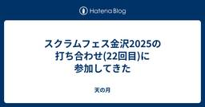

天の月
https://aki-m.hatenadiary.com/
ソフトウェア開発をしていく上での悩み, 考えたこと, 学びを書いてきます(たまに関係ない雑記も)
フィード

スクラムフェス金沢2025の打ち合わせ(23回目)に参加してきた
天の月
aki-m.hatenadiary.com スクラムフェス金沢2025に向けた準備をしてきたので、会の様子を書いていこうと思います。 Keynoteの状況共有 WSのセッション調整 キャッシュ・フロー更新 ネットワーキング ノベルティ タスクの棚卸し Keynoteの状況共有 依頼いただいていた事項が完了して、事前に打ち合わせすることもできそうだという話の共有がありました。(意外と日がないので運営MTGが始まる前に動いてくれて話が共有されました) WSのセッション調整 WSの枠を伸ばしたいという要望がWS実施者からあったので、その要望を反映させるためにどういう案があるか？という話をしていきまし…
10時間前

Cline&CursorによるAIコーディング徹底活用―Live Vibe Coding付きに参加してきた
天の月
Cline&CursorによるAIコーディング徹底活用―Live Vibe Coding付き - connpass こちらのイベントに参加してきたので、会の様子と感想を書いていこうと思います。(冒頭の解説とライブコーディング部分のみ視聴しました) 会の概要 会の様子 AIツールの使い分け Roo Codeのデモ&解説 会全体を通した感想 会の概要 以下、イベントページから共有です。 Cursor・Clineなどのソフトウェア開発支援のAIツールの進化は目覚ましく、開発者の生産性に大きく影響を与えています。 一方、進化が早すぎるがゆえにあまり使いこなせていない、使いこなせている自信がないという方…
1日前

スクラム祭りの打ち合わせ(38.5回目)をしてきた
天の月
aki-m.hatenadiary.com こちらの打ち合わせ(番外編)をしてきたので、会の様子と感想を書いていこうと思います。 Keynote カンファレンス設計 オンラインの盛り上げ 忘れるスキル OST Keynote Keynoteとしてどういうセッションを求めたいのか？という話をしていきました。傾向とパターンを掴むために、スクラム祭りでは過去にあった講演であのKeynoteをして欲しいという話や、逆にあのKeynoteは(普通のセッションとしては全然いいんだけど)Keynoteとしてはして欲しくないという話をしました。 軸として、場を盛り上げてカンファレンスのこの後の体験に対してワク…
2日前

大人のソフトウェアテスト雑談会 #270【ハチ】に参加してきた
天の月
ost-zatu.connpass.com 今週もテストの街葛飾に行ってきたので、会の様子と感想を書いていこうと思います。 ビブリオバトル スクラムフェス ファシリテーション本 鎌倉 ファシリテーター ビブリオバトル XP祭りの名物にビブリオバトルがありますが、スクラム祭りが同時開催ならスクラム祭りでもビブリオバトルをやって、頂上決戦を最後にやるみたいなコンテンツやったら面白そうだという話が出ていました。 ちなみに、XP祭りにおけるビブリオバトルのコンテンツは、バトルの応募はされないんだけれども視聴者はたくさんいるコンテンツになっているそうです。 スクラムフェス スクラムフェスが毎月ありますが…
3日前

スクラム祭りの打ち合わせ(38回目)をしてきた
天の月
aki-m.hatenadiary.com こちらの打ち合わせをしてきたので、会の様子と感想を書いていこうと思います。 キャッシュ・フロー更新 メール返信 浅草地域トラックの追加 地域トラックの確認 趣意書のupdate Confengineのupdate キャッシュ・フロー更新 先週に引き続き、ありがたいことにスポンサーが増えていたのでキャッシュ・フローを更新しました。 Goldスポンサーということもありだいぶ黒字化したので、感謝しかないです。 メール返信 スポンサーの方からメールをいただけたので、それに対してお礼の返信をしました。 浅草地域トラックの追加 地域トラックがすでに多数ある状況で…
5日前

XP祭り2025の運営MTG(4回目)に参加してきた
天の月
XP祭りの運営MTG(4回目)に参加してきたので、会の様子を書いていこうと思います。 Confengineのアップデート 次回日程決め Confengineのアップデート confengine.com スクラム祭りでConfengineはアップデートしたのですが、まだXP祭りの運営でこういうところをアップデートしたいみたいなのは話すことができていなかったので、そこのアップデートをどうしましょうか？という話をしていきました。 具体的には以下を直していきました。 XP祭りのHPに記載されているConfengineのリンクを、スクラム祭りのConfengineのリンクに修正しました XP祭りに登壇し…
5日前

伝わるコードレビュー 開発チームの生産性を高める「上手な伝え方」の教科書 - FL#93に参加してきた 1
1
天の月
伝わるコードレビュー 開発チームの生産性を高める「上手な伝え方」の教科書 - FL#93 - connpass こちらのイベントに参加してきたので、会の様子と感想を書いていこうと思います。 会の概要 会の様子 講演 本を書いたきっかけ 本を書く際に気をつけたこと 印象的だったこと 本書に込めた想い レビュアーに伝わるPRの準備 Q&Aパネルトーク レビューコメントで必ず修正してほしい、参考情報、みたいなレベル感をどのように調整しているか？ レビューのタイミングで基本設計やアーキテクチャの問題を話す際に苦慮しているのだが伝え方で改善できる部分はあるか？ レビュアーとレビュイーで意見が分かれた場合…
6日前

スクラムフェス金沢2025の打ち合わせ(22回目)に参加してきた
天の月
aki-m.hatenadiary.com スクラムフェス金沢2025に向けた準備をしてきたので、会の様子を書いていこうと思います。 香盤表確認 セッション調整 スポンサーブース設営 キャッシュ・フロー確認&更新 香盤表確認 自分をはじめとしたスクラムフェス新潟に参加していたメンバーが前回の運営MTGに参加することができていなかったので、そのときに作った香盤表を確認しました。 結論、特に問題もなく、調整しなくても良さそうだという話になりました。 セッション調整 採択している中さんのセッションを延長したいという話がご本人からあったのですが、それができるのか？という話をまずしていきました。 結論、…
7日前

Hey Say アジャCITYの読書会(5回目)に参加してきた
天の月
表題のイベントに参加してきたので、会の様子を書いていきます。今回もホンダ流のワイガヤのすすめを読んでいって今回が最後でした。 テーマのバランス 批判と個人攻撃を区別する 大企業体質×わいがや わいがやに参加している年齢層の広さ 無駄話から本題へ切り替わるタイミングの早さ 複雑なことを単純な認知にしていきたくなる理由 テーマのバランス テーマはかなり抽象的なところからスタートしていましたが、突拍子もないテーマだとも思いそうだし、途中で収束を挟んでいたところからも一定はテーマのスコープを定めてあげるような取り組みが必要なんだろうという話をしていきました。 批判と個人攻撃を区別する 例えば若者のこと…
8日前
アジャイルカフェ@オンライン 第72回に参加してきた
天の月
agile-studio.connpass.com こちらのイベントに参加してきたので、会の様子と感想を書いていこうと思います。 agile-studio.connpass.com 会の概要 会の様子 前提 見積もりの目的 見積もりのやり方 No Estimate Q&A タスクも相対見積もりするのが人気か？ 実装を始めてから見積もりよりも大変なことが分かったらどうする？その逆は？ プロダクトリリースまでの見積もりに対して進捗状況を知る方法はバーンダウンチャート以外にあるか？ 会全体を通した感想 会の概要 家永さん天野さんじょうさんの3人のアジャイルコーチが、アジャイル実践者から寄せられた質問…
9日前
yr-learning Vol67に参加してきた
天の月
yr-learning Vol67 - connpass こちらのイベントに参加してきたので、会の様子と感想を書いていこうと思います。 BuilderパターンでGameStatusをBuildしてみる 次回以降の予定決め BuilderパターンでGameStatusをBuildしてみる Builderパターンを使って、GameStatusをBuildしてみるようにしました。Typescriptで書いていましたが、どちらかというとOOPチックに書いてみて、こんなものかなというのを途中途中で議論しながら作りました。 そもそも今のタイミングでBuilderパターンを書く必要があるのかという話や、Bu…
10日前
大人のソフトウェアテスト雑談会 #269【笹団子】に参加してきた
天の月
https://ost-zatu.connpass.com/event/354733/ 今週もテストの街葛飾に行ってきたので、会の様子と感想を書いていこうと思います。 スクラムフェス新潟 おおひらさんの声品質 全体を通した感想 スクラムフェス新潟 色々な人が登壇していたので、印象的だったセッションの話をしていきました。やましたさんのセッションや自分のセッションの話が挙がっていて、自分のセッションはここで挙げてくれると思っていなかったのでとても光栄でした。(ただしやましたさんは自分のようにはなりたいとは思わなかったそうです笑) また、各々が楽しかった思い出話だったり、葛飾にゆかりがある人の近況に…
11日前
スクラム祭りの打ち合わせ(37回目)をしてきた
天の月
aki-m.hatenadiary.com こちらの打ち合わせをしてきたので、会の様子と感想を書いていこうと思います。 キャッシュ・フロー更新 趣意書の更新箇所説明 バックログのリファインメント Keynote Speakerを確定する 売り出すチケットの種類を決める&Eventbrightでチケット販売開始 サテライトの地域を確定させる スポンサー申し込んでもらっている方々からロゴをもらう&HPに反映させる ドラフト会議の日程や段取りを確定する Discordのチャンネル設計を決める HPの更新箇所を洗い出す キャッシュ・フロー更新 ありがたいことにスポンサーが増えていたのでキャッシュ・フロ…
12日前
スクラムフェス新潟Day2に参加してきた
天の月
www.scrumfestniigata.org スクラムフェス新潟Day2に参加してきたので会の様子と感想を書いていこうと思います。(WIP) Ryoさんと話す moriyuyaさんと話す moriyuyaさん川口さんHiroさんと話す いくおさんびばさんと話す 登壇 Ryoさんと話す 裏番組だったRyoさんと話をしていきました。Ryoさんはスライド作成の型の完成系に近づいたと今回の発表で感じてたそうですが、スライドが20枚ちょいと少なかったので、1ページあたりどれくらい話すつもりか聞いた所、話そうと思えばいくらでも話せると思っているということで、むしろこれ以上スライドを増やすと時間オーバー…
13日前
スクラムフェス新潟2025で登壇してきた
天の月
www.scrumfestniigata.org スクラムフェス新潟2025で登壇してきたのでそのふりかえりです。 登壇準備 登壇中 登壇後 登壇準備 以前少し書いたのですが今回はこれがAcceptされるとはびっくりという感じで、テストとはいえスクラムフェス新潟の人たちに受けるのかな？(だいぶマニアックなテーマではないかな...?)という感じがしたので、驚きからのスタートでした。まずどういう風にすると面白い話になるかな、というのを考えていきました。言ってしまえば結構特殊なコンテキスト環境下におけるN=1の事例発表ですし正解とかベストプラクティスとか体系的な話はまるでできないので、自分自身あんま…
14日前
スクラムフェス新潟2025 Day1に参加してきた
天の月
www.scrumfestniigata.org スクラムフェス新潟Day1に参加してきたので会の様子と感想を書いていこうと思います。 到着 リハーサル いくおさんが現れる やまずんさんと初対面する リハーサル のりっくさんマッシャーさんと話す じょーさんと話す ささおさんと話す KuroさんほそたにさんHIROさんと話す びばさんと話す じゅんぺーさんと話す えわさんと話す オープニング スポンサーセッション おおひらさんとnacoさんのセッションを聞く keynote ばっさーさんと会ってグッズをもらう かっぱさんとお話する かっぱさんきょんさんHIROさんとお話する KAZUKINGさん…
15日前
GWのふりかえり
天の月
自分はまだGWは終わっていないのですが、明日からはスクラムフェス新潟に参加するということもあり、今年は14日くらい取得したGWにやっていたことをふりかえろうと思います。 読書 旅行 運動 コーディング 登壇資料作成 睡眠 読書 ここ最近読書のペースが落ちていたので、読みたかった本をばーっと色々読んでいきました。 クリティカルチェーン ストリートコーダー つくりながら学ぶ！LLM 自作入門 ダイナミックリチーミング 第2版 ―5つのパターンによる効果的なチーム編成 アジャイルデータモデリング 組織にデータ分析を広めるためのテーブル設計ガイド Good Code, Bad Code ～持続可能な開…
16日前
yr-learning Vol66に参加してきた
天の月
yr-camp.connpass.com こちらのイベントに参加してきたので、会の様子と感想を書いていこうと思います。 環境構築 関数型プログラミングをTSでやっていく場合の雰囲気を掴む 最初のテストケースを書く 小さな歩幅で進める 環境構築 github.com 今日からは関数型プログラミングで開発をしてみようという話をしていたので、早速環境構築から取り掛かっていきました。 リポジトリはこれまでのものを流用しようということで、ディレクトリだけ切ってworkspaceFolderを作ったりindex.tsやtsconfig.jsonを作っていきました。(Bunでほとんどは自動化されていたのでだ…
17日前
大人のソフトウェアテスト雑談会 #268【休日】に参加してきた
天の月
大人のソフトウェアテスト雑談会 #268【休日】 - connpass 今週もテストの街葛飾に行ってきたので、会の様子と感想を書いていこうと思います。 スクラムフェス新潟 イラスト 生成AIが出てからのプロポーザル変化 テスト観点 全体を通した感想 スクラムフェス新潟 いよいよ今週に迫ってきたスクラムフェス新潟の話をしていきました。 おおひらさんが急遽オープニング登壇をすることになったためおおひらさん自身の登壇もある中で準備が大変だという話をしたり、今年のスクラムフェス新潟にはのりっくさんも来るという話をしたり、発表準備をお互いにどのようにやってきているのか？といった話をしたりしていました。 …
18日前
スクラム祭りの打ち合わせ(36回目)をしてきた
天の月
aki-m.hatenadiary.com こちらの打ち合わせをしてきたので、会の様子と感想を書いていこうと思います。 雑談 Confengineのupdate キャッシュ・フローのupdate 公式Xでの告知 雑談 秋田→仙台→新潟という独特？なルートで旅をしている中で、なぜ仙台に寄ろうと思ったのか？という話から仙台で楽天とオイシックス新潟の1戦を見たいと思ったのとバスケの試合を見に行きたかったのが理由だという話をしていました。 選手一覧を見ると知っている選手が多数いて驚きでしたが、これでもなかなか勝てないというのはプロ野球のレベルの高さを思いしりました。 Confengineのupdate…
19日前
なぜイノベーションは起こらないのかを読んだ
天の月
www.maruzen-publishing.co.jp 献本いただいたこちらの本を読んだので、印象に残った部分や感想を書いていこうと思います。(読書感想ブログを書くときは自分はいつもこのスタンスですが)ぜひ実際に手にとって読んでほしいので、書籍の中身にはあまり触れないように意図的にしていますが、記載していない部分も含めて示唆に富む箇所が多く、素晴らしい本でした。 本書を特におすすめしたい人 本書で特に印象に残ったトピック 3タイプのイノベーションとリーダーシップ 書いてしまいがちなよくないビジネスモデルキャンバス 読んでいて個人的に好感がもてたポイント すっきりした翻訳 おまけ(誤字発見) …
20日前
スクラムフェス金沢2025の打ち合わせ(20回目)に参加してきた
天の月
aki-m.hatenadiary.com スクラムフェス金沢2025に向けた準備をしてきたので、会の様子を書いていこうと思います。 諸々の発注確認 プロジェクター 基調講演のConfengine HPの更新 追加チケット ノベルティ 諸々の発注確認 スピーカーチケットの発行状況の確認と弁当や飲み物の発注の確認、ステッカーの発注確認、Xバナーの入稿確認、ポスターの入稿確認をしていきました。 弁当や飲み物に関しては使える値段が一定決まっているので、昨年よりは少し豪華なものが頼めるんじゃないか？という話をした後に、とりあえず今人数が確定している分に関しては先んじて発注をしてしまおうという結論になり…
21日前
Hey Say アジャCITYの読書会(4回目)に参加してきた
天の月
表題のイベントに参加してきたので、会の様子を書いていきます。今回もホンダ流のワイガヤのすすめを読んでいきました。 多様性 人事に任せる 差の価値と違いの価値 キックオフなどではワイガヤは効果がない？ アイスブレイクを行う人 ワイガヤの条件 多様性 多様性が重要と言いつつも受け身型の人はあまり推奨されないという話があったりしたので、特性が違う人をなんでもかんでも受け入れるというのはあんまり望ましいことではないんだろうなという話をしていきました。 そう考えると、ワイガヤを成立させるためには結構ハードルが高いかもしれないという意見もありました。 人事に任せる ワイガヤに向いていない人のコントロールを…
22日前
2025年4月のふりかえり
天の月
2025年も1/3が終わったのでふりかえりをしていこうと思います。 仕事 社外活動 プライベート 仕事 ここ数ヶ月ずっと忙しかった中で一つの山を無事に乗り越えることができて、久しぶりに休みも取れたり無理なく働けたりする時期があったりした一ヶ月になりました。 改めてここまでをふりかえってみると、自分の責任範囲を超えてうまくやることができたなと思えた一方で、すべてをトータルして見たときにはあんまり望ましい結果といえない部分も多くあって、そこが自分の責任範囲や専門性からは遠い状況であった際にこのあたりをどうしていくか？何がやれるのか？というのに悩む月でした。 また、(この言葉は個人的にあんまり好きで…
23日前
yr-learning Vol65に参加してきた
天の月
yr-learning Vol65 - connpass こちらのイベントに参加してきたので、会の様子と感想を書いていこうと思います。 これまでやってきたCoding Kataのソリューションを見る 全体を通した感想 これまでやってきたCoding Kataのソリューションを見る github.com 一旦前々回でこれまでのようにCoding Kata(Trading Card Game)を終わりにしようという話だったので、実装の正解例を見ていきました。話としては以下のようなコメントが出ていました。(常体かつ箇条書きで記載していきます) E2Eがあってそのケースは非常にシンプルというのは面白い…
24日前
大人のソフトウェアテスト雑談会 #267【昭和】に参加してきた
天の月
https://ost-zatu.connpass.com/event/353012/ こちらのイベントに参加してきたので、会の様子と感想を書いていこうと思います。 製造業カレンダー 自動運転 自社のブログ 全体を通した感想 製造業カレンダー お正月休みやGWというのは結構な日があるけれども、祝日はほぼないという話がありました。工場をできる限り長く動かしたいという意図で作られているところがスタートになっているそうで、1日だけ休みを取るといったことは嫌うそうです。 ちなみに、基本的にすべての製造業はこのカレンダーで動いているものの、ソニーだけは製造業なのにこのカレンダーを採用していないということ…
25日前
スクラム祭りの打ち合わせ(35回目)をしてきた
天の月
aki-m.hatenadiary.com こちらの打ち合わせをしてきたので、会の様子と感想を書いていこうと思います。 開催趣意書のupdate スポンサー費用の使い道の記載 開催概要 タイムテーブル HPのupdate 告知 開催趣意書のupdate 開催趣意書をupdateしました。 スポンサー費用の使い道の記載 XP祭りと同時開催するということもあって、スクラム祭りにスポンサーするとどのような用途で何に使われるのか？という話をはっきり書いておいたほうがスポンサーにとっても親切だろうということで、スポンサー費用の使い道を記載することにしました。 また、XP祭りと同時開催する部分に関しては、…
1ヶ月前
2週間以上ゆっくりしてみることにした
天の月
今年のGWは、社会人になってからでいうと育休と転職期間を除くとおそらく最長のお休みをとることにしたので、今日は経緯とやりたいことを書いてみようと思います。 経緯 仕事で忙しい時期が続いていた きっかけ1 : きょんさんと1on1をした きっかけ2 : ryuzeeさんのポスト きっかけ3 : 家族に素直に気持ちを伝えてもらう 休暇中にやりたいこと 休暇後にやりたいこと 経緯 カンファレンスなどでお会いしている方には、ちょいちょいなんで休むことにしたのかを聞かれるのでまずは経緯を書いていこうと思います。大事なことだけ先に書いておくと、体調に関しては心身ともに問題はないです。 仕事で忙しい時期が続…
1ヶ月前
スクラムフェス金沢2025の打ち合わせ(19回目)に参加してきた
天の月
aki-m.hatenadiary.com スクラムフェス金沢2025に向けた準備をしてきたので、会の様子を書いていこうと思います。 Reject通知の送信 スタッフ 情報保障 WiFi Discordサーバー チケット 優先的にやるべきタスクの確認 Tシャツの送付先 Reject通知の送信 前回Accept通知を送付した方々全員からAccept通知をいただけたということで、今回はなくなくプロポーザルをRejectすることにした方々に対して、Reject通知を送付しました。 最初にReject時のメール文面を昨年のものからコピーして持ってきて、その後は文面を確認した後にテストで運営の人たちにF…
1ヶ月前
Data Engineering Study #29 今だから学びたいDatabricks徹底活用術に参加してきた
天の月
Data Engineering Study #29 今だから学びたいDatabricks徹底活用術 - connpass こちらのイベントに参加してきたので、会の様子と感想を書いていこうと思います。 会の概要 会の様子 Databricksで完全履修！オールインワンレイクハウスは実在した！ 人不足・時間不足を言い訳にせずDatabricks をうまく利用する 出版社こそデータドリブンに！ Databricksで叶える集英社の未来を創るデータ活用術 会全体を通した感想 会の概要 以下、イベントページから引用です。 Databricks。Databricksは何が優れているのか、他のデータウェア…
1ヶ月前